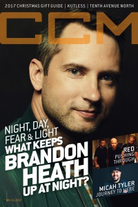

Brandon Heath
 |
| January 2011 CCM Digital |
 |
| November 2012 CCM Digital |
| 15 February 2015 CCM Digital |
 |
| 15 November 2017 CCM Digital |
Media coverage:
- Aug 2006 in CCM "Standing Room Only: Welcome Home Tour", by Andy Argyrakis
- Oct 2006 in CCM "Ones to Watch: Thoughtful Pop", by Paul Colman
- Sep 2007 in CCM "Story Behind the Song: I'm Not Who I Was", by Brandon Heath
- Sep 2007 in New Man "Guy Gear: The Uncomfortable Life", by Chad Bonham
- Nov 2010 in CCM Digital "In the Studio: Brandon Heath", by Andrew Greer
- Jan 2011 in Christianity Today "Two Minutes With...: Brandon Heath"
- Jan 2011 in CCM Digital "Brandon Heath", by Caroline Lusk
- Feb 2011 in Charisma "Empower: The Divine Romancer", by Brandon Heath
- Jul 2012 in CCM Digital "Your World: Love Your Neighbor", by Caroline Lusk
- Sep 2012 in CCM Digital "Musicians Corner: In the Studio: Brandon Heath"
- Nov 2012 in CCM Digital "Roots Run Deep", by Caroline Lusk
- Jul 2013 in CCM Digital "Your World: Love Your Neighbor", by Caroline Lusk
- 15 Apr 2014 in CCM Digital "Tour Spotlight: The Roadshow Tour, Chicago Theatre, Chicago, IL", by Andy Argyrakis
- 15 Feb 2015 in CCM Digital "Looking Back to Move Ahead", by Matt Conner
- 15 Sep 2017 in CCM Digital "Sharing Our Scars", by Andrew Greer
- 15 Nov 2017 in CCM Digital "Night, Day, Fear & Light", by Matt Conner
Albums & reviews:
2006: Don't Get Comfortable
- Sep 2006 in CCM, by Kristi Henson
- Sep 2006 in Passage, by Chad Bonham
- Sep 2006 in Relevant, by Jeremy Owens
- Nov 2006 in Worship Leader
- Nov 2006 in Charisma, by DeWayne Hamby
- Jul 2008 in Worship Leader
- Nov 2008 in Living With Teenagers, by Randy Williams
- Jan 2011 in CCM Digital, by Grace S. Aspinwall
- Mar 2011 in Worship Leader, by Andrea Hunter
- Mar 2011 in YouthWorker, by Andrew Greer
- Apr 2011 in Living With Teenagers, by Randy Williams
- Oct 2012 in Worship Leader, by Amanda Furbeck
- Oct 2012 in CCM Digital, by Grace S. Aspinwall
- Dec 2013 in CCM Digital, by Caroline Lusk
- Dec 2013 in CCM Digital, by Grace S. Aspinwall
- Feb 2015 in Charisma, by Felicia Abraham
- 15 Feb 2015 in CCM Digital, by Andy Argyrakis
Award Summary (Nominations / Wins)
Dove Awards- 2007 Dove Awards
- Worship Song: "Our God Reigns"
- Song: "I'm Not Who I Was"
- Songwriter
- New Artist
- Pop/Contemporary Recorded Song: "Im Not Who I Was"
- Song: "Give Me Your Eyes"
- Male Vocalist
- Pop/Contemporary Recorded Song: "Give Me Your Eyes"
- Male Vocalist
- Short Form Music Video: "Wait And See"
- Male Vocalist
- Short Form Music Video: "Love Does"
- Christmas Album: Christmas is Here
- 2008 Grammy Awards
- Best Pop/Contemporary Gospel Album: What If We
- Best Gospel Song: "Give Me Your Eyes"
- Best Gospel/Contemporary Christian Music: "Your Love"
- Best Contemporary Christian Music Song: "Your Love"
- Best Contemporary Christian Music Album: Leaving Eden
Published articles:
© 2011 CMnexus. Last updated September 2019. Contact: editor -AT- cmnexus -DØT- org About